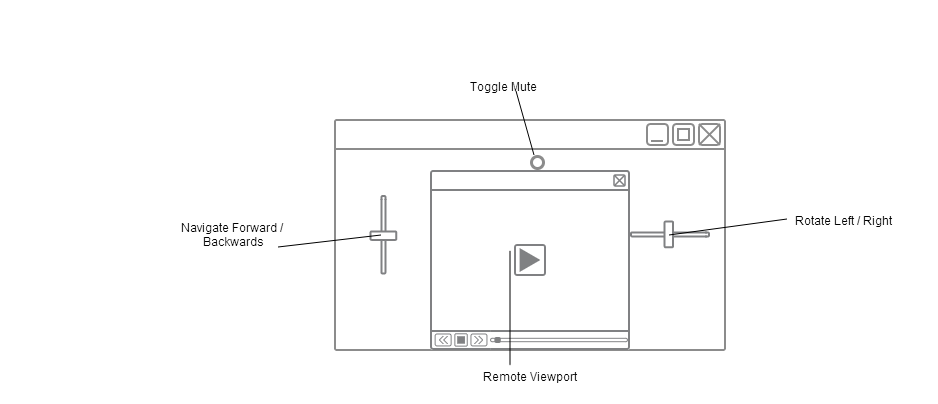

Microprocessors have shaped the world over the last century. Reducing in size over time exponentially, we are now able to achieve things that would have been unimaginable in the past. We can squeeze more bits per volume, transport more information and crunch more data each second than ever before. With this explosion of portability and connectivity comes a renaissance of technological growth that is unfolding before our eyes.
Density of information and computation as well as the speed of communication are at the core of modern digital technology, yet focusing on these features displays a very hands-on 'white box' approach. There is also much to be learned with respect to the interaction between digital components and their environments, which could be considered more of an external 'black box' style description. The interface and sensors a device supplies for others to interact with is just as important as the computational and communicative abilities the device has internally to process the environment around it.
By extrapolating on current computational growth trends, we can easily imagine the capabilities we will soon wield while developing applications to improve our everyday lives. By studying these applications (both mundane and whimsical alike) we are likely to find many exciting ideas which are attainable much more immediately than they first appeared as well as many which are just around the bend.
Arthur C. Clarke once wrote "Any sufficiently advanced technology is indistinguishable from magic", and I am inclined to agree. Indeed many amazing discoveries can find roots in sci-fi and futuristic predictions which push the boundaries of our collective knowledge and explore the potential and logical conclusions of current technological progress. The most recent ideas which are moving from science fiction to science fact are telepresence and augmented reality.
To introduce these ideas, I will start by defining telepresence:
"Telepresence systems provide a human operator with the feeling of actual presence in a remote environment, the target environment. The feeling of presence is achieved by visual and acoustic sensory information recorded from the target environment and presented to the user on an immersive display."[AH11]
Augmented Reality (which is a branch of virtual reality (VR) technology) is a multifaceted topic that not only lends itself extremely well to telepresence applications but extends far beyond it. Here we will focus primarily on the intersection of the two ideas despite each existing independently of the other. Applications in this domain will not only use telepresence technologies to unite two remote locations, but they will use augmented reality techniques in order to make up for the loss in fidelity that occurs when we replace the user's natural environment with a virtual representation. Three sensory obstacles causing loss of information have been identified:
[CWKG96]
It is important to note that this lack of fidelity is a huge obstacle to telepresence adoption. Why would I send an e-mail to somebody if I know I can call them directly? Why would I call them if they were available in person? In order to be useful, telepresence needs to solve a direct need. Typically, the following circumstances have allowed telepresence to improve our ability to interact, especially with the addition of telepresence robots:
[AWZ98]
Smart phones and telecommunications aren't the only technology in this arena, but they are certainly the largest and most influential. Other devices to consider when discussing telepresence devices are lightweight microprocessors and system on a chip designs. These devices can allow industry and hobbiests alike to create a wide array of telepresence hardware that is capable of interacting with the environment around it on another's behalf. In this case, we are now less bound by strict computational limits and are now merely bound by the sensors, motors, and analog/digital conversions available to read from (and interact with) the environment around us.
When we combine our new-found freedom to invent any sort of sensory device with our fully connected and always online 'internet of things', we can begin to explore and create all sorts of ideas that were inaccessible to the real-world and thus bound to the realm of fiction, futurism, and sci-fi.
Microcontrollers have become the de-facto platform for lightweight, mobile, and miniaturized devices. Much of the power of microcontrollers has been achieved by clever specializations and optimizations of the CPU unit. By diverging from the Desktop model where raw power takes precedence over power consumption, there are now a variety of architectures and specialized components that are well-suited to mobility. In fact there is now a wide spectrum of hardware ranging from high performance to low power consumption. With server and desktop hardware on one end of the spectrum, we have recently expanded the power efficient end of the spectrum with a range of miniaturized ARM general-purpose CPUs capable of of supporting a general-purpose operating system and related peripheral components in an extremely small enclosure. To continue down the spectrum we depart from a traditional operating system and move towards programmable integrated circuits (PIC) and pure-hardware components which perform more specialized tasks using even less space and power.
Because of this balance between portability and power, it is important to keep in mind the practical limitations on the applications a device can support. While a computationally demanding task such as image processing, we are unlikely to get satisfactory results with a PIC controller, yet the current generation of ARM controllers which are recently emerging are just beginning to practically handle these tasks, and this can be echoed by the libraries and toolkits developers have ported to the platforms. For example, there are now openCV ports on both the android and IOS platforms. This is a testament to their increasingly pervasive capabilities.
An interesting idea to consider is delegation of the heavy processing to a more capable device. However, this strategy simply moves the problem from the computational I/O boundaries of the device towards the networking I/O boundaries. To achieve practical results, we can use a hybrid approach by allowing the device to pre-process the data (assuming such a pre-processing can reduce the size of the raw data, preferably an order of magnitude or more) before sending the derived result over the network to a more capable device.
Moving from our internal capabilities towards our external interactivity, we are capable of hooking up a wide array of sensors, displays, and feedback devices. From motors to spectroscopy sensors to audio capture and processing (and many, many more) the possibilities are limited only by the fidelity/accuracy of the sensors around us and our own creativity.
It begins to become clear that tele-robotics is not an idea that would lend itself to any situation. The reduction in fidelity we introduce by using a proxy or avatar robot is severe enough that we have only found successful use-cases in well-defined environments such as laboratories and factories where there are little or no unknown variables. Situations where there are people in close proximity to the robots are often too dangerous for the technology to be applied, and furthermore the decrease in the awareness a user would have with their remote surroundings makes the potential for interaction very limited.
[CWKG96,]
The idea of presence fidelity can be considered a continuum. We can consider verbal descriptions and printed material on the low-fidelity end of the spectrum, while actual presence would be on the highest end. [AWZ98]
The need to provide high fidelity information in real-time is the defining challenge of telepresence systems. Current telepresence infrastructure comes with restrictive limitations due to network latency and available throughput. These challenges have been met with several techniques such as lowering the fidelity rate transmitted, compressing the data in transit, and prioritizing which data is most relevant to the situation.
Within the context of mobile devices we need to consider not only the computational complexity and bandwidth consumption of video streaming, but the power consumption of the encoder as well. [AKK09]
Network traffic can be prioritized using QoS (Quality of Service) classification. By prioritizing traffic types into real-time and non-real-time categories we can decrease the average latency on timing-critical services. By extending these concepts and including cooperative game theory strategies (by exploring Nash Bargaining Systems). A game theory strategy can be broken down into three components: Players, Strategies, and Interactions (or game utilities). If we can determine a metric for success in the context of each player, than we can create strategies which each player can use to interact with the system in a way which optimizes the collective success of all the players. Applied to bandwidth optimization, each network device is a player which utilizes a strategy for sharing the limited resources of the network.
The trend among wireless networks is an increased number of cells over smaller and smaller areas serving users. By reducing this cell size, we introduce an increased number of hand offs when the user is mobile. When a user passes from the range of one operator to the next, this hand-off should not interrupt the user's communication. Because of this, our QoS strategies should include a percentage of bandwidth reserved for hand-off services.
With many different use-cases and bandwidth categories our goal is to create a strategy which optimizes the usability of all devices on the network. By ordering our bandwidth categories by highest to lowest priority we can allocate each users traffic into their respective categories while also dynamically adjusting the maximum flow of each category to reflect (as well as prioritize) the immediate demand in real-time [Kim11,KV04,LYC04]
As telepresence technology matures, we will find ourselves relying on it in many new ways. The amount of information each device will be capable of collecting from our every day lives underscores the importance of security policies and data management. We may, for instance, be comfortable sharing a live video stream with a friend, yet that same video stream may reveal information about our location or activities which we would not want to share with others. The need for confidentiality is important to both individuals as well as businesses and institutions.
To address these circumstances, access policies must be put into place. The use-cases for these access policies can be quite diverse, and any proposed system must properly address them all in order to be widely accepted. For instance, if I have a telepresence system at home it would be reasonable to allow my own cellular device to view my house at any time. However, another user trying to view my home environment should be denied access unless I have explicitly granted it to them. Once their session has ended, their access should again be revoked.
In access control systems, the concept of groups is not new. However, in telepresence systems groups apply to more than just users, they apply to the devices as well. If I have two or more telepresence devices in my home or an organization, I should be able to facilitate another user to view from either environment (and even switch between seamlessly) for the duration of their session. In this way, the remote user is less constrained by the software and can have the flexibility of interacting wherever the hardware allows.
So far we have used the term 'session' in two different scenarios, but have left the details a little vague. A session may not be limited to a series of sequential actions with one agent as in the traditional sense of the word. A session can move beyond the hardware it was created on and travel across several telepresence devices in a group.
The access control should be aware of other variables, such as time and geo-location. This allows for much more dynamic and easily defined roles.
Now that we've provided a background on our improved access control model, we can come up with some use-cases to describe how this control system should work.
The first item states that anyone in the 'family' group can access my household telepresence devices freely for a short duration after dinner. The second states that my work peers can instantly appear on my phone at their own discretion when I am at the office during working hours. The third states that friends can call me between 5 and 10 PM, but I must answer for them to connect.
Encrypting live video streams is computationally expensive. Because of this, there is a trade off between bit rate and security that must be addressed. On one hand, we want to be reasonably confident that our communications are not being intercepted. On the other hand, we want the highest quality video and the longest use of our mobile device batteries. There is much to be gained by exploring this continuum, as well as the possibility of selective encryption to hide only the most sensitive data. [Feh13]
With the advent of Location Based Services (LBS) it is becoming increasingly difficult to control the extent in which a users locational information is used. Mix networks use short-term psudo-anonymous names to mask the identities of participants. With this mechanism, it becomes much more difficult for an adversary to correlate which actions in the system were performed by which users of the system. Since mix networks leverage multiple proxy servers to achieve anonymity, this is going to cause a tremendous spike in latency and bandwidth utilization. [LL12,FRF+07,PHE02]
The ubiquity of cameras and CCTV devices along with the proliferation of digital signal processors and facial tracking techniques are making the collection and centralization of user activities increasingly simple. Proposed countermeasures include using DSP techniques to selectively scramble identifying information such as license plates and faces to preserve user privacy, however these techniques rely on the cooperation of the surveillance administrators as well as the addition of costly components to the surveillance system. Currently the only countermeasure users have to prevent privacy intrusion is to opt-out of an otherwise useful service. In many cases such as public CCTV opting out is difficult if not entirely impossible. [Cav07,HR13]
Efforts to create a system which allows for users and even objects (in the case of license plates and sensitive documents) to register a preference for privacy and be 'scrubbed' from any published video have been explored. This does, however, require the cooperation of video producers and publishers by running their video through a central 'privacy scrubbing' service in a process that is comparable to a telemarketing 'do-not-call' list. While there is no technical reason preventing people from ignoring the video scrubbing process, publishers could be subjected to social and legal pressure to respect the privacy preference of others.
Ironically, the need for users to identify their privacy preference as well as their timestamped location into the central database dictates that they must give up their locational privacy in order to preserve their video privacy. [Bra05]
I propose that with additional countermeasures, the location of a user wishing to remain anonymous can be effectively verified while their identity remains a secret, provided several non-anonymous users whom the central privacy authority trusts each independently verifies the locational claim of the anonymous user via radio signal triangulation. In this way, the anonymous user can verify their location at a particular time without revealing any digital fingerprint or certificate to other nodes in the network including the central database.
With the advance of internet connectivity, it is rare that modern mobile cellular devices are off line. If we are constantly in communication by means of a global (universal) IP address, It follows that we can achieve two things which we previously could not.
First, we can synchronize our local data with the data of others in real-time. This lends itself to instant news aggregation, social media, e-mail, instant messaging, and even VoIP technologies. This is not in itself extremely surprising as these features have existed in the scope of the desktop application since the dawn of always on high-speed broadband connections, but the ability to bring this to a widely distributed array of mobile devices brings the connectivity of our society (and the speed of information travel as a result) to an all new level.
Second, we can now outsource services which are not desired or capable of running on the mobile device to another computer. While this is typically (as of yet) a cloud service provider's machine, it is reasonable to consider that over time software will develop which allows users to host their own content from a simple always-on home computer which serves as a personal hub for content including but not limited to public social media, geo-secure proxy access, private home surveillance, and data storage. By using strict private/public tags, and 'group' authentication on a server's data as well as RSS-style content aggregators, it should be possible to design a decentralized 'home cloud' service which can serve many useful purposes to a mobile user in the field.
As our current trend of miniaturized mobile networked devices continues, the ability to stream high definition real-time media from many simple cellular devices is beginning to unfold. With higher quality cameras emerging in consumer devices as well as faster network connectivity emerging in the forms of 3G and 4G telecommunication services it is completely feasible (even today) to use two phones to achieve a long distance video conversation.
It is interesting to consider that if we can stream enough information between two points to effectively allow a user to 'see' and 'hear' what is in another location, then theoretically speaking we must have processed and moved (via the VoIP phone system) enough information about the two locations to effectively understand (to the same degree the two communicating people were capable) what is happening at each of the locations. We as humans don't think about the image processing we do on a daily basis. We take for granted the fact that, somewhere between the rods and cones of our eyes and the high-level understanding we have of our surroundings, a lot of information was processed, stored, and acted upon.
While the topic of Artificial Intelligence and Computer Vision is far from bridging this gap, impressive results have been found by re-thinking the ways we can facilitate enhanced modelling and identification techniques.
If many radio-enabled devices (whether via wifi, bluetooth, gps, or other means) are within communication range, it is possible to use time-synchronized signals to triangulate the positions of the devices with respect to each other. If any of these devices were equipped with a GPS, it could communicate this information and allow neighbors to take their local position data (respective to each other) and place them globally.
If any of these devices were equipped with an accelerometer and a camera, it is theoretically possible to calculate a position and orientation vector for the camera, effectively letting the device give extremely precise descriptions of what region of space is being recorded. This information (spatial meta-data, as well as the raw audio/video data) can be combined with other similar information from the region in order to provide high-fidelity reconstructions of recorded events. This information can be further augmented by other sensory input such as spectroscopes, depth-sensors, and environment monitors.
Time-synchronization techniques are limited by the sample speed of the measuring apparatus' clock. Determining distance by means of the received signal strength do not require a clock, however the distance cannot be deduced from the signal strength alone without a calibration phase which takes into account the variance of each device's radio signal.
These devices have been designed with object recognition in mind and are not particularly suited for 3D scanning applications. Low resolution and a large amount of noise are certainly factors when re-purposing these technologies for scanning[]
Imagine a doctor in front of device operates instrumentation which performs surgery on a remote patient. instrumentation includes a wide variety of I/O (controls and sensory output via microphone, video, and even tactic feedback) Assume access to highly detailed descriptions of our I/O over the duration of many operations (live experience captures) The challenge is to make a virtual model of the operating procedure in which the doctor can interact with a virtual patient in a way which is synonymous with the standard interactions they would encounter with a live patient.
The challenge is considered 'solved' when the doctor cannot differentiate between a live patient telepresence experience and a simulated patient telepresence experience I call this challenge the "Telepresence Turing Test", and it can be applied to any activity or domain in which telepresence can augment.
This challenge has a few interesting unknowns.
How 'synonymous' with live data can we realistically make the experience?
What are the most important factors we need to capture in our training data? What instrumentation can best capture those factors?
From the training data (live experience captures), how can we best create and improve upon a simulation model?[]
Lightweight mobile telepresence systems is a rapidly-evolving concept. Traditionally we have been bound by heavy and cumbersome desktop hardware, high-latency, and low network throughput. As these barriers have been reduced and removed, we have begun to redefine what it means to be connected.
Always-Available network communication
Real-Time video streaming
Geolocational services
Screen sharing (also useful for remote presentation)
File sharing (p2p for reducing infrastructure and bottle necks)
User/Group management and authentication
In conclusion, we are capable of much more than what is currently offered in terms of increasing the fidelity of our telepresence systems. On top of the increase in raw information storage capabilities, improvements in sensors as well as interactive peripherals have reshaped the way we use technology. If current trends continue we will soon find ourselves in a high density and highly distributed network of miniature devices, both as stand alone technologies (such as currently emerging smart phones) as well as embedded into every day consumer objects (as is the case with RFID tagging, QR coded items, and micro-controller enabled electronics). With this emerging paradigm it becomes much easier for computers to identify and process the objects around them, leading the way to many new modelling and digitizing techniques.
The client application is built using javascript within a browser environment. The main application library consists of a widget factory which is in charge of creating the major application components and injecting their UI into the DOM. Several of these widgets depend on network connectivity, so we provide these upon widget initialization using dependency injection. Because of these network components, it is important that we initialize our network objects before building most of our widget components.

The authentication server contains an abstract model coupled with a controller allowing for basic read/write operations. The model is managed by an authentication API, which is the interface that client applications directly interact with over a webSocket channel. This authentication API allows for applications to perform various authentication tasks such as creating a user, logging in, and checking which other users are currently online. The authentication API is coupled with a publisher/subscriber module which allows a client to be notified if a particular part of the model changes. This is useful for being alerted when another client changes status from online to offline.

Each client widget has it's own command API, and the application has naming and routing mechanisms to relay commands from these various sources to the appropriate widget. The widget then handles the command however it pleases.
In order to improve on current telepresence technologies, we must revisit the main sensory obstacles in telepresence interaction and modify our implementations in a way that reduces such obstacles. To reiterate, these obstacles are:
The goal of this project is to create a system which automates and facilitates the above in a helpful and intuitive way via data augmentation of the live stream. These three points will each be addressed individually by it's own software module placed between the telepresence device and the user's device.
A good example would be to recognize and highlight a QR code should one come into the visual frame. The users options could be as simple as 'open URL in browser' or 'ignore'.
A second example would be to alert the user when a presenter has entered the frame after a lengthy absence.
Finally, if a group of two or more people collaborate to make a 'digital audience', tags, notes, and comments can be passed among audience members in real time. For example, if the professor leaves a particularly difficult equation on the board, audience members could be enabled to directly click on the location of the equation within the video in question and communicate their interest in a real time collaborative way. This information can be saved along with the video for the professors review at a later time.
There are a wide variety of telepresence devices available, each with it's own features and limitations. This project will focus on the most common telepresence software available, which is the modern smart phone. We can assume that the telepresence device will come equipped with a camera and a microphone, as well as a wireless network connection capable of simultaneously transmitting and receiving audio/video data with latency low enough to qualify for 'real-time communication'. If required, benchmarks and data may later be supplied to demonstrate that this is indeed a common feature of modern hardware.
In order to achieve our goals, the approach I intend to take involves scanning the raw telepresence data between clients in order to parse and extract some of the high level information out of it. If we can automate the detection of useful signals, gestures, queues, and events in the raw audio/video data, we can highlight and emphasize this information to the user. Furthermore, if the signals we parse can be responded with by a minimal subset of actions we are entirely capable of supplying these options in real-time and allowing the user to quickly decide how they choose to respond.
If the mobile telepresence devices which collect and transmit the raw audio/video data are most likely to be modern smart phones, than we would be wise to treat these devices as thin clients in the sense that their purpose is limited to data collection and user interaction. The heavy processing involved with computer vision over large streams of image matrices would quickly overwhelm such devices.
Because of this limitation I plan on deploying a cloud server which intercepts the data streams between clients in order to process the large amounts of raw data. This cloud will also store the streams and act as a database of past transmissions along with all the key meta-data we accumulate through our processing techniques.
The hardware needed to deploy such a system requires high bandwidth and low latency. The proxy characteristics of the proposed computer vision cloud server will negatively effect latency, but should be appropriate for live communications in most cases.
While I suspect treating the mobile end-point devices as a thin client (by offloading the live signal processing to a cloud server) is an obvious gain, the increased latency of adding a proxy server could theoretically be measured against the reduced computational power of the smart phone devices with respect to computer vision processing. For bandwidth reduction, a hybrid approach can be imagined in which the visual stream is pre-processed on site and only the derivative data is sent to the server directly, however this leaves the server without raw video data which would force the users to result to more contrived and elaborate means of seeing the presenters environment.
In the situation where large groups of users wish to view a single location at the same time, it is increasingly likely that the host cannot serve the entire crowd at once. There are several ways to deal with this, the most obvious being that the host serves to one or more mirror sites which divide the user base amongst themselves. A more collaborative method would be to use the users as peer to peer mirrors, but the bandwidth available to the average peer could limit their outbound streaming ability past the point of usability.
Another consideration is which codec to use when compressing the audio and video data. Industry standards are heavily pushing the mpeg4 h264 codec, and after a brief overview I am inclined to agree with their methodology.
Finally, the digital signal processing of the audio/video data on the server is certainly the most complex component of this project. The best technique to extract and process the incoming data is a vast and complex topic; One that is extremely circumstantial and unlikely to have a single clear-cut solution. Furthermore, the ability to accelerate real-time video data crunching via gpgpu and parallel techniques is extremely promising in an application such as this.
Plenty of data needs to be transmitted through this system. Not only do we have the raw audio and video data, but we have to arrange a communication protocol which does at least two things. First, it needs to create and manage user sessions in a way that allows them to reliably connect to each other. Second, it needs to communicate the information we derive from each streaming session back to the user associated with the session.
Because the two message passing use-cases are so mutually exclusive, it is entirely possible to divide the workload across two different servers; the first of which would handle authentication and user sessions and the second of which would be tasked with using visualization techniques on the streams and returning any results back to the users.

